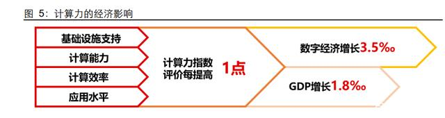
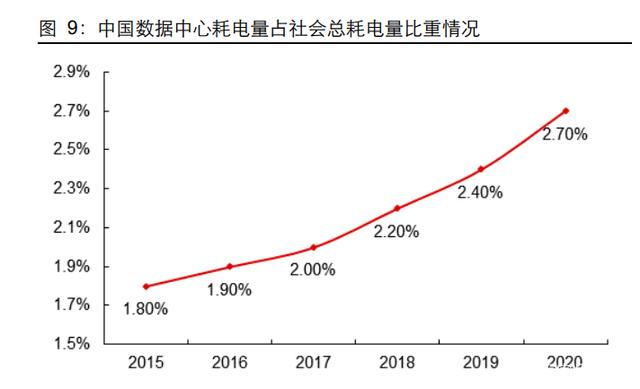
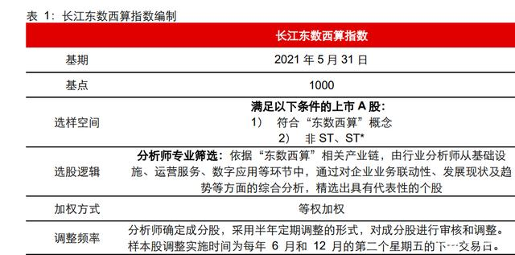

计算机行业东数西算专题报告：以变应变，“指”向数字经济新版图
“东数西算”：于变局中开新局
在“无数据不经济”的当下，创新调度国土空间算力资源，构建全国一体化数据中心网 络的“东数西算”工程无疑是用改革的办法解决发展中问题的有力诠释，也是深化供给 侧改革、拉动内需的一个重要抓手和举措，其所蕴含的投资价值和经济意义值得长期关注。面对全社会信息化发展的趋势和数据安全重要性的提升，利用东西资源分布差异构 建循环体系对优化存量算力结构，预留增量空间意义重大，同时数据中心的产业带动效应，亦能在西部催生出多样化业态，开启经济正向循环。
风起：千亿级赛道改写数字经济格局
2022 年 2 月 17 日，国家发展改革委、中央网信办、工业和信息化部、国家能源局联合 印发文件，同意在京津冀、长三角、粤港澳大湾区、成渝、内蒙古、贵州、甘肃、宁夏 8 地启动建设国家算力枢纽节点，并配套规划了 10 个国家数据中心集群。至此，全国 一体化大数据中心体系完成总体布局设计，“东数西算”工程正式全面启动。 “东数西算”中的“数”指的是数据，“算”指的是算力，“东数西算”即是通过构建数 据中心、云计算、大数据一体化的新型算力网络体系，将东部算力需求有序引导到西部， 使数据要素价值最大化。
起因：“算力”基础设施化建设的重要抓手
厘清“东数西算”工程的内涵，首先需要对“算力”这一新基建的重要组成要素有一个 清晰的认知。算力，即数字化信息处理能力，是数据中心的服务器通过对数据进行处理 后实现结果输出的一种能力，存在于各种软硬件设备中，是其日常应用的基础保障。目 前，我国算力约为 135EFlops（每秒浮点运算次数），相当于 10 亿台笔记本电脑共同计 算。
近年来伴随数字经济发展，全社会数据总量激增，数据存储、计算、传输和应用的需求 同步增长，算力逐渐跃升为信息化时代下新的发展驱动力。据 IDC、浪潮信息、清华大 学全球产业研究院联合编制的《2021-2022 全球计算力指数评估报告》显示，算力对经 济增长具有正向拉动作用。在对全球6 个大洲15个国家的计算力水平进行全面评估后， 《报告》指出，计算力指数平均每提高 1 个点，GDP 将增长 1.8‰，且国家计算力指数 越高，对 GDP 带动性越强。同时，算力已成为支撑各行业“上云用数赋智”的关键， 对互联网、金融、制造、电信等行业的发展意义深远。当算力逐渐成为承载高需求的重 要国际资源，分配和调度便成了我们需要首要解决的关键性问题，而“东数西算”作为 算力基础设施化的抓手工程，是国家适应数字经济时代的重大战略部署。

布局：数据向西，算力向东
“东数西算”工程从本质来看遵循资源调度逻辑，旨在优化供求格局和资源配置，促进 东西部协同联动，这种跨区域资源调度以实现最优解的举措并非先例。从 1950 年的“南 水北调”，1986 年的“西电东送”，再到 1998 年的“西气东输”，中国通过探索和实践 分别实现了水、电、燃气的南北调配、东西互济，资源配置格局得以实现优化。
“东数”为何要“西算”？解答这一问题需追溯至东西部算力资源供需失衡、亟待优化 的现状。发展算力，意味着需要大规模的数据中心作为载体，但建立数据中心不仅需要 土地资源，还需要消耗大量电力资源。从算力资源空间分布来看，东部地区虽算力需求 旺盛但却面临能耗指标紧张、电力成本高等问题，而西部地区现阶段算力需求不足但资 源充沛，不管是工业用地成交楼面均价还是工商业用户电价均具备成本优势，发展潜力 值得关注。 启动“东数西算”，一方面有利于破解算力资源“一二线紧张，三四线充足”的局面，推 动数据中心合理布局。工程采取因地制宜模式，将后台加工、离线分析、存储备份等对 网络时延要求不高、访问不频繁的温冷数据调度至低碳、低成本的西部，从而优化东部 数据中心资源以承接时延要求较高的数据。另一方面有利于推动西部发展，通过算力枢 纽和数据中心集群的建设，带动产业链上下游，从而革新西部地区产业格局。

现状：政策视角来看，“东数西算”进度如何？
从政策端来看，“东数西算”工程的整体进程可分为四个关键阶段：树立概念、拟定架 构、敲定节奏、正式启动。1）树立概念：2020 年 4 月发改委首次明确“新基建”范围， 将以数据中心为代表的的算力基础设施纳入范畴。2）拟定架构：2021 年 5 月，四部委联合提出“4+4 国家枢纽节点+省级节点+边缘节点”的架构，旨在调度东西资源，建设 全国一体化算力网络。3）敲定节奏：2021 年 7 月，工信部发布《新型数据中心发展三 年行动计划（2021-2023）》，明确阶段性目标，计划用 3 年时间，基本形成布局合理、 技术先进、绿色低碳、算力规模与数字经济增长相适应的新型数据中心发展格局。4）正 式启动：2022 年 2 月，“东数西算”工程正式全面启动，至此，全国一体化大数据中心 体系完成总体布局设计。
从当前进度来看，相关市场主体积极参与大数据中心建设，项目开端良好。据发改委统 计，截至 2022 年 4 月 18 日，全国 10 个国家数据中心集群中，新开工项目 25 个，数 据中心规模达 54 万标准机架，算力超过每秒 1350 亿亿次浮点运算，约为 2700 万台个 人计算机的算力，带动各方面投资超过 1900 亿元。

长江东数西算指数
结合背景来看，“东数西算”工程所承载的战略意义和影响使得其成为了近年来市场关 注的热点，同时也赋予了相关产业链新的发展机遇。为了探寻这一热点背后所蕴含的长 期投资价值，长江指数联合行业组特别构建东数西算指数，旨在追踪相关概念股的动态 表现。
长江东数西算指数构建
长江指数依托于研究所内资深投研团队的长期基本面跟踪判断，从数据中心的生态入手， 甄选出产业链各环节中具有代表性的“东数西算”概念股。入选成分股均经过综合评估， 在业务联动性、发展现状及趋势等方面与“东数西算”显示出较强的契合度。 长江东数西算指数基期为 2021 年 5 月 31 日，彼时全国一体化算力网络架构初步确立， “东数西算”战略工程的设想正式步入大众视野，多家上市企业“借东风”发力数字新 基建。截至目前，指数内共有 63 个成分股，入选成分股主要隶属于“数”通道、“算” 网络两大领域。
长江东数西算指数表现
基期至 2022 年 4 月 29 日，长江东数西算指数整体相对长江全 A 实现了 15.5%左右的 超额收益，以 2022 年 3 月为界，呈现出先扬后抑的趋势。 复盘来看，长江东数西算指 数走势整体与政策风向相契合，在相关政策利好信号释放时，指数均有亮眼表现。 结合前一小节中“东数西算”关键政策的梳理来看：
1）基期至 2021 年 8 月，“东数西算”工程架构和行动计划的先后确立，为算力基础设 施相关企业注入活力，指数迎来为期 3 个月左右的上涨行情，指数区间涨幅达 12.91%， 超额长江全 A 约 12.06%。
2）2022 年 2 月，随着“东数西算”工程的正式启动，“东数西算” 热度持续发酵，相 关概念股走强带动长江东数西算指数强势攀升，指数区间涨幅达 16.23%，超额长江全 A 约 13.46%。
3）急剧上升的热度背后同样隐含着风险，2022 年 3 月开始，疫情反复叠加俄乌局势骤 然不明拉升 A 股市场的避险情绪，科技板块整体下挫，“东数西算”热度削弱，指数步 入回调阶段，且调整幅度较大。2022 年 3 月至 2022 年 4 月 29 日，指数跌幅逾 28%， 高于同期长江全 A 跌幅水平（16.26%）。 但值得注意的是，主题热度短期内的加速攀升和回落在一定程度上有利于“东数西算” 概念的“出清”，随着关键节点工程的陆续实施完成，指数重回升势可期。